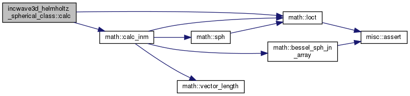
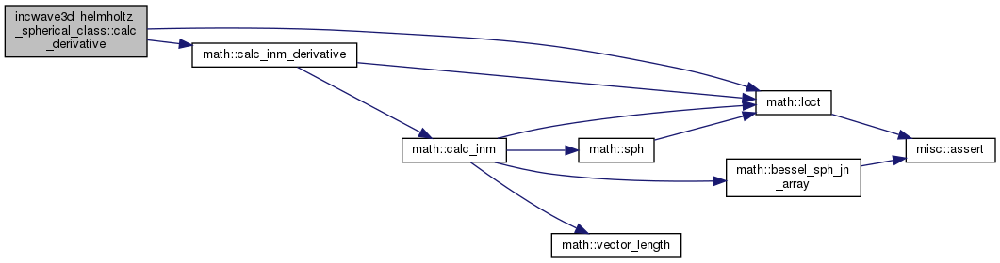

3D-Helmholtz方程式を満たす球面波  [詳解]
[詳解]
データ型 | |
| type | incwave3d_helmholtz_spherical |
関数/サブルーチン | |
| subroutine | init (self, w, c, amp, n, m, origin) |
| 初期化 [詳解] | |
| elemental subroutine | destructor (self) |
| finalizer [詳解] | |
| complex(8) function | calc (self, x) |
| 点xでの入射波の値を計算 [詳解] | |
| complex(8) function, dimension(3) | calc_derivative (self, x) |
| 点xでの入射波の勾配の値を計算 [詳解] | |
詳解
3D-Helmholtz方程式を満たす球面波
関数/サブルーチン詳解
◆ calc()
|
private |
点xでの入射波の値を計算
- 引数
-
self x 座標
- 戻り値
- 入射波の値
incwave3d_helmholtz_spherical_class.f90 の 72 行目に定義があります。
参照先 math::calc_inm(), math::loct().
complex(8) function calc(self, x)
点xでの入射波の値を計算
Definition: incwave3d_helmholtz_planewave_class.f90:61
Definition: incwave3d_helmholtz_spherical_class.f90:9
呼び出し関係図:

◆ calc_derivative()
|
private |
点xでの入射波の勾配の値を計算
- 引数
-
self x 座標
- 戻り値
- 入射波の勾配
incwave3d_helmholtz_spherical_class.f90 の 89 行目に定義があります。
参照先 math::calc_inm_derivative(), math::loct().
Definition: incwave3d_helmholtz_spherical_class.f90:9
complex(8) function, dimension(3) calc_derivative(self, x)
点xでの入射波の勾配の値を計算
Definition: incwave3d_helmholtz_planewave_class.f90:74
呼び出し関係図:

◆ destructor()
|
private |
◆ init()
| subroutine incwave3d_helmholtz_spherical_class::init | ( | class(incwave3d_helmholtz_spherical), intent(out) | self, |
| real(8), intent(in) | w, | ||
| real(8), intent(in) | c, | ||
| complex(8), intent(in) | amp, | ||
| integer, intent(in) | n, | ||
| integer, intent(in) | m, | ||
| real(8), dimension(3), intent(in) | origin | ||
| ) |
初期化
- 引数
-
self w 角周波数 c 位相速度 amp 複素振幅 n 球面波の次数 m 球面波の次数 origin 球面波の中心
incwave3d_helmholtz_spherical_class.f90 の 41 行目に定義があります。